Example analysis notebook - single cell studies database#
This notebook produces figures in the manuscript A curated database reveals trends in single cell transcriptomics
Notebook repository: vals/single-cell-studies
The database is available at: https://www.nxn.se/single-cell-studies/
Running this notebook will save the following figures in the current folder:
all_studies.pdf
biorxiv_over_time.pdf
cells_per_month.pdf
clustering_over_time.pdf
clusters_per_cells.pdf
pseudotime_over_time.pdf
scrnaseq_studies.pdf
studies_over_time.pdf
techniques_over_time.pdf
tsne_over_time.pdf
# %pylab inline
# %config InlineBackend.figure_format = 'retina'
import io
import matplotlib.font_manager
from mizani.breaks import date_breaks
from mizani.formatters import date_format
# Only pandas >= v0.25.0 supports column names with spaces in queries
import pandas as pd
ts = pd.Timestamp # Alias for pd.Timestamp
import plotnine as p
import requests
import numpy as np
import statsmodels.api as sm
import statsmodels.formula.api as smf
import warnings
import matplotlib.colors as mplcol
import colorsys
warnings.filterwarnings("ignore") # plotnine has a lot of MatplotlibDeprecationWarning's
url = "http://nxn.se/single-cell-studies/data.tsv"
df = pd.read_csv(url, sep='\t')
# converts string to date format, can only be run once!
df['Date'] = pd.to_datetime(df['Date'], format='%Y%m%d')
# converts string of reported cells total to float, can only be run once!
df['Reported cells total'] = df['Reported cells total'].str.replace(',', '').map(float)
print(df.shape)
(1897, 28)
# plot number of studies over time
p.options.figure_size = (9, 2)
fig = (
p.ggplot(p.aes(x='Date', y='DOI'), data=df.resample('1M', on='Date').count()[['DOI']].reset_index())
+ p.geom_bar(stat='identity')
+ p.theme_minimal(base_family='Arial')
+ p.scale_x_datetime(breaks=date_breaks('1 years'), labels=date_format('%Y'))
+ p.labs(y='Number of studies')
)
fig.save('studies_over_time.pdf')
print(fig)
---------------------------------------------------------------------------
TypeError Traceback (most recent call last)
Cell In[3], line 4
1 # plot number of studies over time
2 p.options.figure_size = (9, 2)
3 fig = (
----> 4 p.ggplot(p.aes(x='Date', y='DOI'), data=df.resample('1M', on='Date').count()[['DOI']].reset_index())
5 + p.geom_bar(stat='identity')
6 + p.theme_minimal(base_family='Arial')
7 + p.scale_x_datetime(breaks=date_breaks('1 years'), labels=date_format('%Y'))
8 + p.labs(y='Number of studies')
9 )
10 fig.save('studies_over_time.pdf')
11 print(fig)
TypeError: ggplot.__init__() got multiple values for argument 'data'
tdf = df.assign(Technique = df['Technique'].str.split(' & ')).explode('Technique')
# Technique dictionary for top 5 techniques
t_dict = {k: k for k in tdf['Technique'].value_counts().head(5).index}
t_dict
{'Chromium': 'Chromium',
'Drop-seq': 'Drop-seq',
'InDrops': 'InDrops',
'SMARTer (C1)': 'SMARTer (C1)',
'Smart-seq2': 'Smart-seq2'}
# Maps remaining techniques to 'Other'.
tdf['Technique'] = tdf['Technique'].map(lambda s: t_dict.get(s, 'Other'))
# list of techniques in alphabetic order for the plot with 'Other' at the end.
techs = list(
tdf['Technique']
.value_counts()
.sort_index()
.index
.difference(['Other'])
)
techs.append('Other')
tdf['Technique'] = (
pd.Categorical(
tdf['Technique'],
categories=techs,
)
)
def lightness(color, lightness):
'''Proportionally modulate color.
'''
rgb = mplcol.colorConverter.to_rgb(color)
h, l, s = colorsys.rgb_to_hls(*rgb)
l = lightness
new_color = colorsys.hls_to_rgb(h, l, s)
hex_color = '#{:02x}{:02x}{:02x}'.format(*map(lambda c: int(c * 255), new_color))
return hex_color
# Lighten matplotlib default colors
clrs = list(map(lambda c: lightness(c, 0.8), ['C0', 'C1', 'C2', 'C3', 'C4', 'grey']))
# Plot number of studies per month by technique
per_month = (
tdf
.groupby('Technique')
.resample('1M', on='Date')
.count()['DOI']
.reset_index()
)
p.options.figure_size = (9, 2)
fig = (
p.ggplot(
p.aes(x='Date', y='DOI', fill='Technique'),
data=per_month.query('Date > @ts("20130101T010101")')
)
+ p.geom_bar(stat='identity', color='grey')
+ p.theme_minimal(base_family='Arial')
+ p.scale_x_datetime(
breaks=date_breaks('1 years'),
labels=date_format('%Y')
)
+ p.labs(y='Number of studies')
+ p.scale_fill_manual(clrs)
)
fig.save('techniques_over_time.pdf')
fig
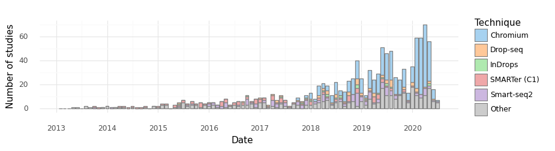
<ggplot: (-9223363289799617820)>
# plot number of studies doing clustering over time
tdf = df[['Date', 'Cell clustering', 'DOI']].dropna()
tdf['Date'] = pd.to_datetime(tdf['Date'], format='%Y%m%d')
per_month = (
tdf
.groupby('Cell clustering')
.resample('1M', on='Date')
.count()['DOI']
.reset_index()
)
per_month['Cell clustering'] = (
pd.Categorical(
per_month['Cell clustering'],
categories=['Yes', 'No'],
)
)
p.options.figure_size = (9, 2)
fig = (
p.ggplot(
p.aes(x='Date', y='DOI', fill='Cell clustering'),
data=per_month.query('Date > @ts("20130101T010101")')
)
+ p.geom_bar(stat='identity', color='grey')
+ p.theme_minimal(base_family='Arial')
+ p.scale_x_datetime(breaks=date_breaks('1 years'), labels=date_format('%Y'))
+ p.labs(y='Number of studies', title='Perfomed cell clustering')
+ p.scale_fill_brewer(palette='Greys')
)
fig.save('clustering_over_time.pdf')
fig
findfont: Font family ['Arial'] not found. Falling back to DejaVu Sans.
<ggplot: (8747055176077)>
tdf['Cell clustering'].value_counts(normalize=True)
Yes 0.897361
No 0.102639
Name: Cell clustering, dtype: float64
# plot number of studies using tsne over time
tdf = df[['Date', 'tSNE', 'DOI']].dropna()
tdf['Date'] = pd.to_datetime(tdf['Date'], format='%Y%m%d')
per_month = (
tdf
.groupby('tSNE')
.resample('1M', on='Date')
.count()['DOI']
.reset_index()
)
per_month['tSNE'] = (
pd.Categorical(
per_month['tSNE'],
categories=['Yes', 'No'],
)
)
p.options.figure_size = (9, 2)
fig = (
p.ggplot(p.aes(x='Date', y='DOI', fill='tSNE'), data=per_month.query('Date > @ts("20130101T010101")'))
+ p.geom_bar(stat='identity', color='grey')
+ p.theme_minimal(base_family='Arial')
+ p.scale_x_datetime(breaks=date_breaks('1 years'), labels=date_format('%Y'))
+ p.labs(y='Number of studies', title='Performed tSNE')
+ p.scale_fill_brewer(palette='Greys')
)
fig.save('tsne_over_time.pdf')
fig
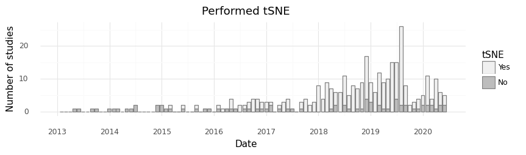
<ggplot: (-9223363289799778209)>
#plot number of studies performing pseudoanalysis over time
tdf = df[['Date', 'Pseudotime', 'DOI']].dropna()
tdf['Date'] = pd.to_datetime(tdf['Date'], format='%Y%m%d')
per_month = (
tdf
.groupby('Pseudotime')
.resample('1M', on='Date')
.count()['DOI']
.reset_index()
)
per_month['Pseudotime'] = (
pd.Categorical(
per_month['Pseudotime'],
categories=['Yes', 'No']
)
)
p.options.figure_size = (9, 2)
fig = (
p.ggplot(p.aes(x='Date', y='DOI', fill='Pseudotime'), data=per_month.query('Date > @ts("20130101T010101")'))
+ p.geom_bar(stat='identity', color='grey')
+ p.theme_minimal(base_family='Arial')
+ p.scale_x_datetime(breaks=date_breaks('1 years'), labels=date_format('%Y'))
+ p.labs(y='Number of studies', title='Perfomed pseudotime analysis')
+ p.scale_fill_brewer(palette='Greys')
)
fig.save('pseudotime_over_time.pdf')
fig
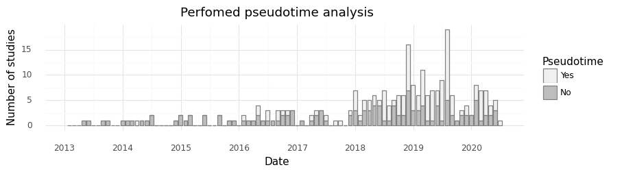
<ggplot: (-9223363289799888903)>
tdf = df.assign(Authors = df['Authors'].str.split(', ')).explode('Authors')
cts_ = tdf.resample('1M', on='Date').count().index[1]
unique_authors = {}
for cts_ in tdf.resample('1M', on='Date').count().index:
unique_authors[cts_] = tdf.query('Date < @cts_')[['Authors']].nunique()
unique_authors = pd.DataFrame(unique_authors).T.reset_index().rename(columns={'index': 'Date'})
p.options.figure_size = (9, 5)
fig = (
p.ggplot(p.aes(x='Date', y='Authors'), unique_authors)
+ p.geom_line()
+ p.scale_y_log10()
+ p.scale_x_datetime(
breaks=date_breaks('3 years'),
labels=date_format('%Y')
)
+ p.labs(y='Unique authors')
+ p.theme_minimal(base_family='Arial')
)
fig.save('unique_authors.pdf')
fig
<ggplot: (-9223363289799740556)>
unique_authors['authors_pct_change'] = (
unique_authors['Authors']
.pct_change()
.replace(0., np.nan)
)
doubling_time = (
unique_authors
.assign(year = unique_authors['Date'].dt.year)
.groupby('year')
.apply(lambda d: np.log(2) / np.log(1 + d['authors_pct_change'].mean()))
.to_frame()
.rename(columns={0: 'doubling_time'})
.reset_index()
)
doubling_time
| year | doubling_time | |
|---|---|---|
| 0 | 2002 | NaN |
| 1 | 2003 | NaN |
| 2 | 2004 | 1.119715 |
| 3 | 2005 | 2.583825 |
| 4 | 2006 | 5.271610 |
| 5 | 2007 | NaN |
| 6 | 2008 | 3.985924 |
| 7 | 2009 | 1.805004 |
| 8 | 2010 | 9.624041 |
| 9 | 2011 | 12.119113 |
| 10 | 2012 | 4.170681 |
| 11 | 2013 | 7.963570 |
| 12 | 2014 | 12.268957 |
| 13 | 2015 | 9.730522 |
| 14 | 2016 | 14.082149 |
| 15 | 2017 | 17.531507 |
| 16 | 2018 | 14.539674 |
| 17 | 2019 | 14.759696 |
| 18 | 2020 | 15.051003 |
p.options.figure_size = (9, 5)
(
p.ggplot(p.aes(x='year', y='doubling_time'), doubling_time)
+ p.geom_point()
+ p.scale_y_log10()
+ p.theme_minimal(base_family='Arial')
)
<ggplot: (8747054448823)>
unique_authors['doubing_time'] = (
(np.log(2) / np.log(1 + unique_authors['authors_pct_change']))
.replace([np.inf, -np.inf], np.nan)
)
p.options.figure_size = (9, 5)
(
p.ggplot(p.aes(x='Date', y='doubing_time'), unique_authors)
+ p.geom_point()
+ p.scale_y_log10()
+ p.theme_minimal(base_family='Arial')
)
<ggplot: (-9223363289800382776)>
# Check top 7 journals.
top_journals = (
df['Journal']
.value_counts()
.head(7)
.to_frame()
.reset_index()
.rename(columns={'index': 'Journal', 'Journal': 'Studies'})
)
top_journals
| Journal | Studies | |
|---|---|---|
| 0 | bioRxiv | 136 |
| 1 | Nature | 82 |
| 2 | Cell | 73 |
| 3 | Nat Commun | 71 |
| 4 | Cell Reports | 66 |
| 5 | Science | 48 |
| 6 | Cell Stem Cell | 28 |
# Check top 7 most common tissues.
tdf = df.assign(Tissue = df['Tissue'].str.split(' & ')).explode('Tissue')
top_tissues = (
tdf['Tissue']
.value_counts()
.to_frame()
.reset_index()
.rename(columns={'index': 'Tissue', 'Tissue': 'Studies'})
.head(7)
)
top_tissues
| Tissue | Studies | |
|---|---|---|
| 0 | Brain | 171 |
| 1 | Culture | 107 |
| 2 | Blood | 35 |
| 3 | Pancreas | 33 |
| 4 | Lung | 32 |
| 5 | Heart | 25 |
| 6 | Bone marrow | 22 |
# Number of studies with preprints in the biorxiv.
df['did_bioRxiv'] = df['bioRxiv DOI'].fillna('?').map(lambda s: {'-': 'No', '?': 'Unknown'}.get(s, 'Yes'))
print(df['did_bioRxiv'].value_counts())
bx_fracs = df['did_bioRxiv'].value_counts()
print('Fraction of studies in biorxiv:', bx_fracs['Yes'] / bx_fracs.sum())
No 415
Unknown 366
Yes 254
Name: did_bioRxiv, dtype: int64
Fraction of studies in biorxiv: 0.24541062801932367
# plot studies in the bioRxiv over time
tdf = df[['Date', 'did_bioRxiv', 'DOI']].dropna()
tdf['Date'] = pd.to_datetime(tdf['Date'], format='%Y%m%d')
per_month = (
tdf
.groupby('did_bioRxiv')
.resample('1M', on='Date')
.count()['DOI']
.reset_index()
)
per_month['did_bioRxiv'] = (
pd.Categorical(
per_month['did_bioRxiv'],
categories=['Yes', 'No', 'Unknown'],
)
)
p.options.figure_size = (9, 2)
fig = (
p.ggplot(
p.aes(x='Date', y='DOI', fill='did_bioRxiv'),
data=per_month.query('Date > @ts("20130101T010101")')
)
+ p.geom_bar(stat='identity', color='grey')
+ p.theme_minimal(base_family='Arial')
+ p.scale_x_datetime(
breaks=date_breaks('1 years'),
labels=date_format('%Y')
)
+ p.labs(
y='Number of studies',
title='Published studies with pre-print deposited to the bioRxiv',
fill='bioRxiv'
)
+ p.scale_fill_brewer(palette='Greys')
)
fig.save('biorxiv_over_time.pdf')
fig
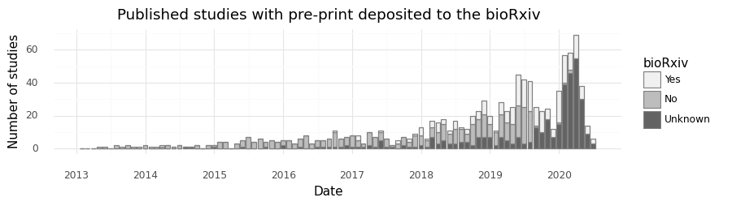
<ggplot: (8747054437054)>
tdf = df.query('Date > @ts(20190101)')
tdf['did_bioRxiv'] = tdf['bioRxiv DOI'].fillna('?').map(lambda s: {'-': 'No', '?': 'Unknown'}.get(s, 'Yes'))
print(tdf['did_bioRxiv'].value_counts())
bx_fracs = tdf['did_bioRxiv'].value_counts()
print('Fraction of studies in biorxiv:', bx_fracs['Yes'] / bx_fracs.sum())
No 415
Unknown 365
Yes 254
Name: did_bioRxiv, dtype: int64
Fraction of studies in biorxiv: 0.24564796905222436
# display breakdown of deposited studies in biorXiv over the last 10 months
display(
per_month
.pivot(index='Date', columns='did_bioRxiv', values='DOI')
.fillna(0)
.sort_index(ascending=False)
.head(10)
)
| did_bioRxiv | Yes | No | Unknown |
|---|---|---|---|
| Date | |||
| 2020-06-30 | 3.0 | 0.0 | 3.0 |
| 2020-05-31 | 5.0 | 0.0 | 9.0 |
| 2020-04-30 | 8.0 | 0.0 | 30.0 |
| 2020-03-31 | 14.0 | 0.0 | 55.0 |
| 2020-02-29 | 10.0 | 2.0 | 46.0 |
| 2020-01-31 | 17.0 | 1.0 | 39.0 |
| 2019-12-31 | 19.0 | 1.0 | 15.0 |
| 2019-11-30 | 5.0 | 0.0 | 7.0 |
| 2019-10-31 | 6.0 | 0.0 | 18.0 |
| 2019-09-30 | 13.0 | 0.0 | 10.0 |
tdf = (
df.assign(Measurement = df['Measurement'].str.split(' & '))
.explode('Measurement')
.dropna(subset=['Measurement'])
)
cats = tdf['Measurement'].value_counts().index
tdf['Measurement'] = (
tdf['Measurement']
.pipe(pd.Categorical, categories=cats)
)
# Plot kind of measurement over time vs number of cells reported.
m_idx = tdf['Measurement'].value_counts().index
clrs = list(map(lambda c: lightness(c, 0.6), ['C0', 'C1', 'C2', 'C3', 'C4']))
p.options.figure_size = (9, 2)
fig = (
p.ggplot(
p.aes(x='Date', y='Reported cells total', color='Measurement'),
data=tdf.sort_values('Measurement')
)
+ p.geom_point()
+ p.scale_y_log10()
+ p.theme_minimal(base_family='Arial')
+ p.scale_x_datetime(breaks=date_breaks('1 years'), labels=date_format('%Y'))
+ p.scale_color_manual(['k'] + clrs)
)
fig.save('all_studies.pdf')
fig
<ggplot: (8747054344354)>
# Make list of techniques
df['Tech'] = df['Technique'].map(lambda s: t_dict.get(s, 'Other'))
techs = list(
df['Tech']
.value_counts()
.sort_index()
.index
.difference(['Other'])
)
techs.append('Other')
df['Tech'] = (
pd.Categorical(
df['Tech'],
categories=techs
)
)
# plot reported number of cells vs technology used over time
p.options.figure_size = (9, 2)
fig = (
p.ggplot(
p.aes(x='Date', y='Reported cells total', fill='Tech'),
data=df.query('Measurement == "RNA-seq"')
)
+ p.geom_point(alpha=1, color='none', size=1)
+ p.scale_y_log10()
+ p.theme_minimal(base_family='Arial')
+ p.scale_x_datetime(
breaks=date_breaks('1 years'),
labels=date_format('%Y')
)
+ p.scale_fill_manual(['C0', 'C1', 'C2', 'C3', 'C4', 'black'])
+ p.labs(fill='Technology')
)
fig.save('scrnaseq_studies.pdf')
fig
<ggplot: (-9223363289799731403)>
# Display median cells per month for last 7 months.
cells_per_study = (
df
.query('Measurement == "RNA-seq"')
.resample('1M', on='Date')[['Reported cells total']]
.median()
.tail(8).iloc[:-1]
.astype(int)
.reset_index()
.rename(columns={'Reported cells total': 'Median cells'})
)
cells_per_study
| Date | Median cells | |
|---|---|---|
| 0 | 2019-11-30 | 39895 |
| 1 | 2019-12-31 | 15601 |
| 2 | 2020-01-31 | 35173 |
| 3 | 2020-02-29 | 36044 |
| 4 | 2020-03-31 | 31514 |
| 5 | 2020-04-30 | 30396 |
| 6 | 2020-05-31 | 22000 |
# Display data for number of studies using RNA-seq for the last 10 months.
studies_per_month = (
df
.query('Measurement == "RNA-seq"')
.resample('1M', on='Date')
.count()
.tail(8)[['DOI']].iloc[:-1]
.reset_index()
.rename(columns={'DOI': 'Studies'})
)
studies_per_month
| Date | Studies | |
|---|---|---|
| 0 | 2019-11-30 | 12 |
| 1 | 2019-12-31 | 29 |
| 2 | 2020-01-31 | 57 |
| 3 | 2020-02-29 | 50 |
| 4 | 2020-03-31 | 68 |
| 5 | 2020-04-30 | 38 |
| 6 | 2020-05-31 | 13 |
monthly_stats = (
studies_per_month
.merge(cells_per_study)
.assign(
Month=studies_per_month['Date'].dt.strftime('%B %Y')
)[['Month', 'Studies', 'Median cells']]
)
monthly_stats
| Month | Studies | Median cells | |
|---|---|---|---|
| 0 | November 2019 | 12 | 39895 |
| 1 | December 2019 | 29 | 15601 |
| 2 | January 2020 | 57 | 35173 |
| 3 | February 2020 | 50 | 36044 |
| 4 | March 2020 | 68 | 31514 |
| 5 | April 2020 | 38 | 30396 |
| 6 | May 2020 | 13 | 22000 |
summary_table = pd.concat({
'Monthly statistics': monthly_stats.T,
'Top tissues': top_tissues.T,
'Top journals': top_journals.T
}).T
summary_table.to_excel('Table 1.xlsx')
summary_table
| Monthly statistics | Top tissues | Top journals | |||||
|---|---|---|---|---|---|---|---|
| Month | Studies | Median cells | Tissue | Studies | Journal | Studies | |
| 0 | November 2019 | 12 | 39895 | Brain | 171 | bioRxiv | 136 |
| 1 | December 2019 | 29 | 15601 | Culture | 107 | Nature | 82 |
| 2 | January 2020 | 57 | 35173 | Blood | 35 | Cell | 73 |
| 3 | February 2020 | 50 | 36044 | Pancreas | 33 | Nat Commun | 71 |
| 4 | March 2020 | 68 | 31514 | Lung | 32 | Cell Reports | 66 |
| 5 | April 2020 | 38 | 30396 | Heart | 25 | Science | 48 |
| 6 | May 2020 | 13 | 22000 | Bone marrow | 22 | Cell Stem Cell | 28 |
df.shape
(1035, 29)
# Query median number of cells reported in 2019
df.query('Measurement == "RNA-seq" and Date > @ts("20190101T010101")').median()
Reported cells total 17800.0
Number of reported cell types or clusters 13.0
dtype: float64
# Display median for last 7 months
df.query('Measurement == "RNA-seq"').resample('1M', on='Date').median().tail(8).iloc[:-1]
| Reported cells total | Number of reported cell types or clusters | |
|---|---|---|
| Date | ||
| 2019-11-30 | 39895.5 | 15.0 |
| 2019-12-31 | 15601.0 | 16.0 |
| 2020-01-31 | 35173.0 | 8.5 |
| 2020-02-29 | 36044.0 | 17.0 |
| 2020-03-31 | 31514.0 | 15.0 |
| 2020-04-30 | 30396.0 | 17.0 |
| 2020-05-31 | 22000.0 | 20.5 |
(
df
.query('Measurement == "RNA-seq" and Date > @ts("20200101T010101")')
.resample('1M', on='Date')
.sum()
.tail(8)[['Reported cells total']].iloc[:-1]
.median()
)
Reported cells total 1355585.0
dtype: float64
# Plot total number of cells in studies published each month over time
rna_df = df.query('Measurement == "RNA-seq"').resample('M', on='Date').sum().reset_index()
p.options.figure_size = (9, 2)
fig = (
p.ggplot(p.aes(x='Date', y='Reported cells total'), data=rna_df.query('`Reported cells total` > 0'))
+ p.geom_bar(stat='identity')
+ p.scale_y_log10()
+ p.theme_minimal(base_family='Arial')
+ p.scale_x_datetime(breaks=date_breaks('1 years'), labels=date_format('%Y'))
+ p.labs(y='Cells per month')
)
fig.save('cells_per_month.pdf')
fig
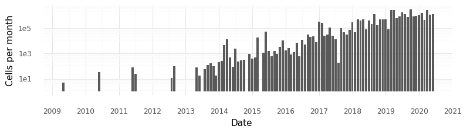
<ggplot: (8747051959609)>
df.query('Date > @ts("20200101T010101")')['Reported cells total'].sum()
7739200.0
# Plot median number of cells in studies each month
median_rna_df = df.query('Measurement == "RNA-seq"').resample('1M', on='Date').median().reset_index()
p.options.figure_size = (9, 2)
fig = (
p.ggplot(p.aes(x='Date', y='Reported cells total'), data=median_rna_df.query('`Reported cells total` > 0'))
+ p.geom_bar(stat='identity')
+ p.scale_y_log10()
+ p.theme_minimal(base_family='Arial')
+ p.scale_x_datetime(breaks=date_breaks('1 years'), labels=date_format('%Y'))
+ p.labs(y='Median cells \nper study \nper month')
)
fig
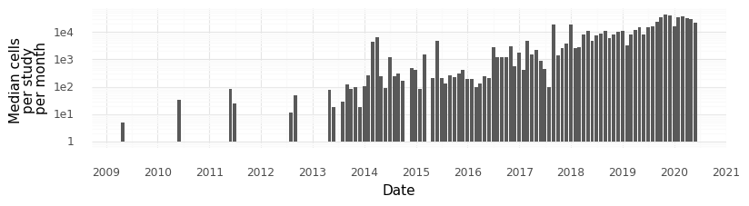
<ggplot: (8747055002716)>
# Take a look at the last 5 entries in the dataset (newest studies)
df.tail().T
| 1030 | 1031 | 1032 | 1033 | 1034 | |
|---|---|---|---|---|---|
| Shorthand | Zhang et al bioRxiv | Niederriter Shami et al DCell | He et al bioRxiv | Le et al Immunity | Fischer et al |
| DOI | 10.1101/2020.06.04.105700 | 10.1016/j.devcel.2020.05.010 | 10.1101/2020.06.14.150599 | 10.1016/j.immuni.2020.05.010 | 10.1038/s41467-020-16893-3 |
| Authors | Meng Zhang, Stephen W. Eichhorn, Brian Zingg, ... | Adrienne Niederriter Shami, Xianing Zheng, Sar... | Peng He, Brian A Williams, Diane Trout, Georgi... | Justin Le, Jeong Eun Park, Vi Luan Ha, Annie L... | NaN |
| Journal | bioRxiv | Developmental Cell | bioRxiv | Immunity | Nat Commun |
| Title | Molecular, spatial and projection diversity of... | Single-Cell RNA Sequencing of Human, Macaque, ... | The changing mouse embryo transcriptome at who... | Single-Cell RNA-Seq Mapping of Human Thymopoie... | Post-surgical adhesions are triggered by calci... |
| Date | 2020-06-05 00:00:00 | 2020-06-05 00:00:00 | 2020-06-15 00:00:00 | 2020-06-16 00:00:00 | NaT |
| bioRxiv DOI | 10.1101/2020.06.04.105700 | NaN | 10.1101/2020.06.14.150599 | NaN | NaN |
| Reported cells total | 300000 | NaN | NaN | NaN | NaN |
| Organism | Mouse | Human, Macaque, Mouse | Mouse | NaN | NaN |
| Tissue | Brain | Testes | NaN | NaN | NaN |
| Technique | MERFISH | NaN | Chromium & Smart-seq2 | NaN | NaN |
| Data location | ftp://download.brainimagelibrary.org:8811/02/2... | NaN | NaN | NaN | NaN |
| Panel size | 118 | NaN | NaN | NaN | NaN |
| Measurement | In Situ | RNA-seq | RNA-seq | NaN | NaN |
| Cell source | NaN | NaN | NaN | NaN | NaN |
| Disease | NaN | NaN | NaN | NaN | NaN |
| Contrasts | NaN | NaN | NaN | NaN | NaN |
| Developmental stage | NaN | NaN | NaN | NaN | NaN |
| Number of reported cell types or clusters | 95 | NaN | NaN | NaN | NaN |
| Cell clustering | NaN | NaN | NaN | NaN | NaN |
| Pseudotime | NaN | Yes | NaN | NaN | NaN |
| RNA Velocity | NaN | NaN | NaN | NaN | NaN |
| PCA | NaN | NaN | NaN | NaN | NaN |
| tSNE | NaN | NaN | NaN | NaN | NaN |
| H5AD location | NaN | NaN | NaN | NaN | NaN |
| Isolation | NaN | NaN | NaN | NaN | NaN |
| BC --> Cell ID _OR_ BC --> Cluster ID | NaN | NaN | NaN | NaN | NaN |
| did_bioRxiv | Yes | Unknown | Yes | Unknown | Unknown |
| Tech | Other | Other | Other | Other | Other |
df_ = df.query('Measurement == "RNA-seq"')
formula = 'Q("Number of reported cell types or clusters") ~ Q("Reported cells total")'
df_['data_scale'] = df_['Reported cells total'].pipe(np.log10).pipe(pd.qcut, 5)
def get_regression_coeff(d):
c = (
smf.ols(formula=formula, data=d)
.fit()
.params['Q("Reported cells total")']
)
return c
def predict_number_celltypes(d):
fit = (
smf.ols(formula=formula, data=d)
.fit()
)
return d.assign(p_ = fit.predict(d))
df_ = df_.groupby('data_scale').apply(predict_number_celltypes)
df_.groupby('data_scale').apply(get_regression_coeff).pipe(np.reciprocal)
data_scale
(0.3, 2.606] 153.298134
(2.606, 3.441] 210.756797
(3.441, 4.063] 8100.666657
(4.063, 4.568] 13892.320871
(4.568, 6.402] 3333.339182
dtype: float64
# plot number of reported cell types/clusters vs total number of cells
p.options.figure_size = (6, 4)
fig = (
p.ggplot(
p.aes(
x='Reported cells total',
y='Number of reported cell types or clusters',
group='data_scale'
),
data=df_
)
+ p.geom_point(alpha=1, size=2)
+ p.scale_x_log10()
+ p.scale_y_log10()
+ p.geom_line(p.aes(y='p_'), color='r', size=1)
+ p.labs(color='Technology')
+ p.theme_minimal(base_family='Arial')
)
fig.save('clusters_per_cells.pdf')
fig
<ggplot: (8747054773105)>
tdf = df.assign(Tissue = df['Tissue'].str.split(', ')).explode('Tissue')
t_dict = {k: k for k in tdf.query('Tissue not in ["Culture", "Tumor", "Embryo"]')['Tissue'].value_counts().head(11).index}
tdf['Tissue_'] = tdf['Tissue'].map(lambda s: t_dict.get(s, 'Other'))
per_month = (
tdf
.groupby('Tissue_')
.resample('1M', on='Date')
.count()['DOI']
.reset_index()
.query('Tissue_ != "Other"')
)
p.options.figure_size = (9, 2)
fig = (
p.ggplot(
p.aes(x='Date', y='DOI', fill='Tissue_'),
data=per_month.query('Date > @ts("20130101T010101")')
)
+ p.geom_bar(stat='identity', color='grey')
+ p.theme_minimal(base_family='Arial')
+ p.scale_x_datetime(
breaks=date_breaks('1 years'),
labels=date_format('%Y')
)
+ p.labs(y='Number of studies')
)
fig
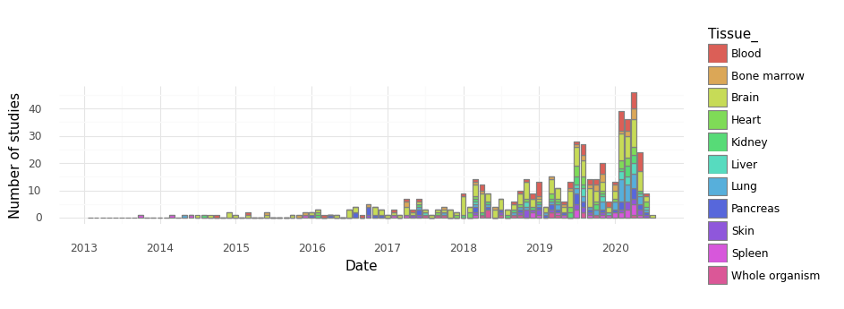
<ggplot: (-9223363289800396572)>
tdf = df.copy()
exclude_tissues = ["Culture", "Tumor", "Embryo", "Whole organism", "Organoid"]
t_dict = {k: k for k in tdf.query('Tissue not in @exclude_tissues')['Tissue'].value_counts().head(11).index}
tdf['Tissue_'] = tdf['Tissue'].map(lambda s: t_dict.get(s, 'Other'))
tdf['Tissue_'].value_counts()
Other 638
Brain 171
Blood 35
Pancreas 33
Lung 32
Heart 25
Bone marrow 22
Skin 19
Kidney 19
Spleen 18
Testis 12
Eye 11
Name: Tissue_, dtype: int64
t_ = pd.Categorical(tdf['Tissue_'])
idx = tdf['Tissue_'].value_counts().index.drop('Other').append(pd.Index(['Other']))
tdf['Tissue_'] = pd.Categorical(tdf['Tissue_'], categories=idx)
p.options.figure_size = (11, 7)
fig = (
p.ggplot(p.aes(x='Reported cells total', y='Number of reported cell types or clusters'), tdf)
+ p.geom_point()
+ p.scale_x_log10()
+ p.scale_y_log10()
+ p.theme_minimal(base_family='Arial')
+ p.stat_smooth(method='lm', se=False, color='red', size=0.66)
+ p.facet_wrap('~Tissue_', ncol=4)
)
fig.save('clusters_per_cells_by_tissue.pdf')
fig
<ggplot: (8747055166244)>
formula = formula = 'np.log(Q("Number of reported cell types or clusters")) ~ np.log(Q("Reported cells total"))'
def get_coeff_pval(d):
c = (
smf.ols(formula=formula, data=d)
.fit()
.pvalues['np.log(Q("Reported cells total"))']
)
return c
tdf.groupby('Tissue_').apply(get_coeff_pval) < 0.05
Tissue_
Brain True
Blood False
Pancreas True
Lung True
Heart True
Bone marrow False
Skin False
Kidney False
Spleen True
Testis True
Eye True
Other True
dtype: bool